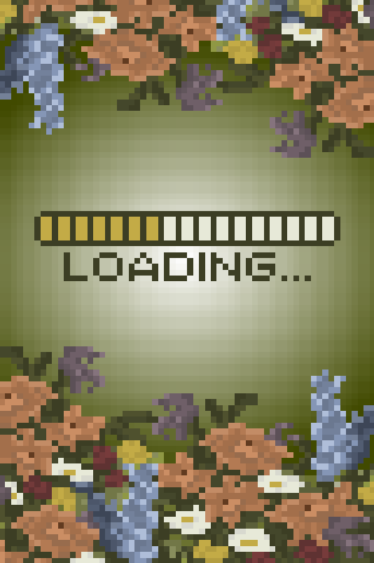
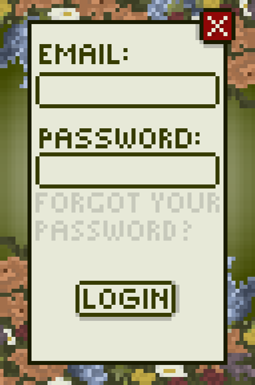
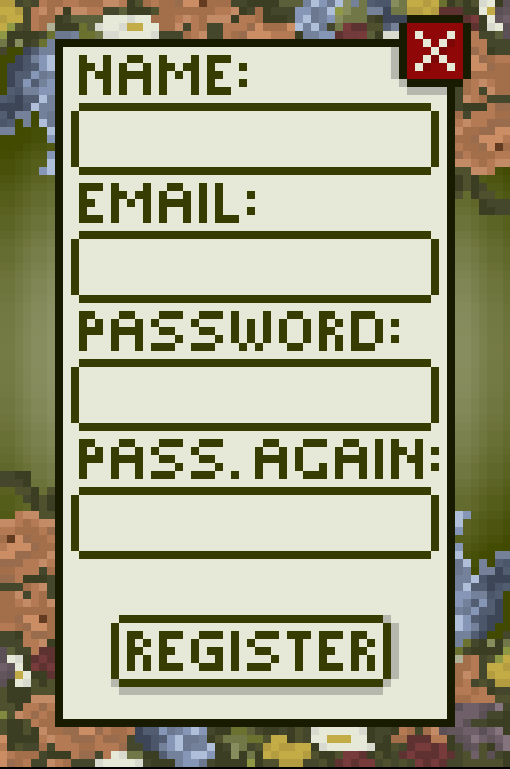
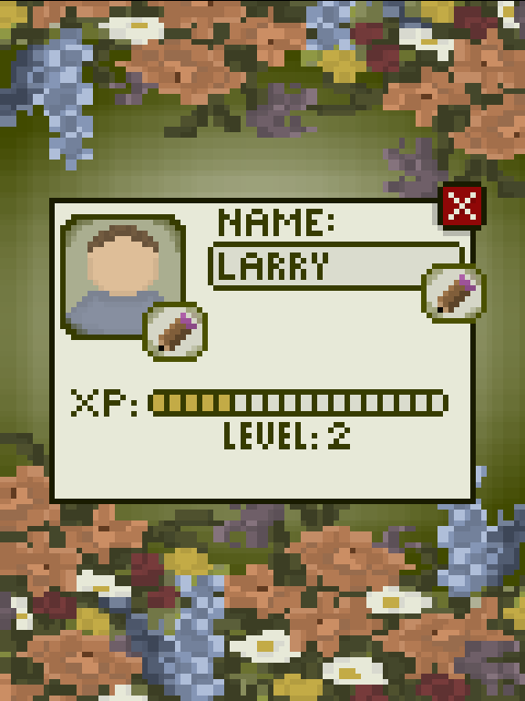
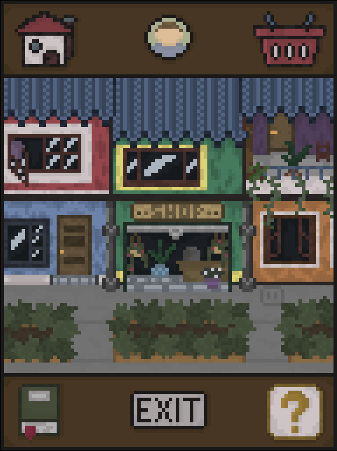
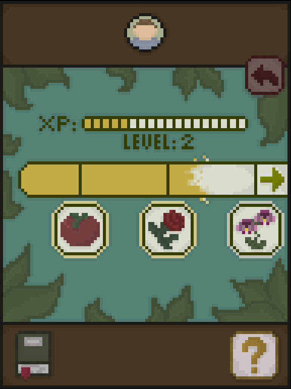
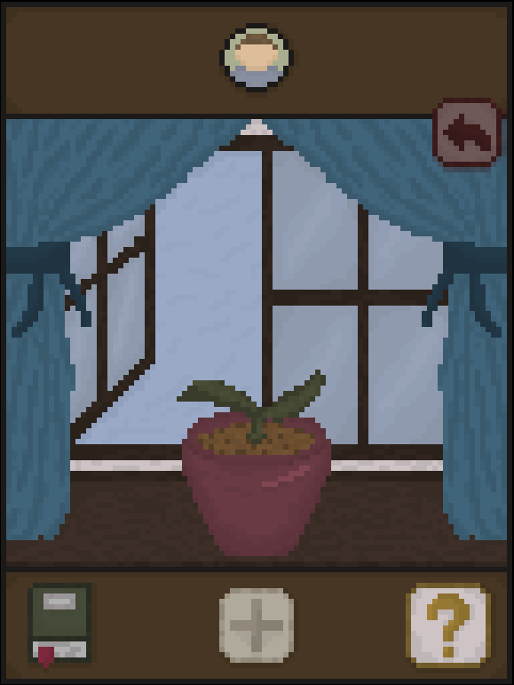
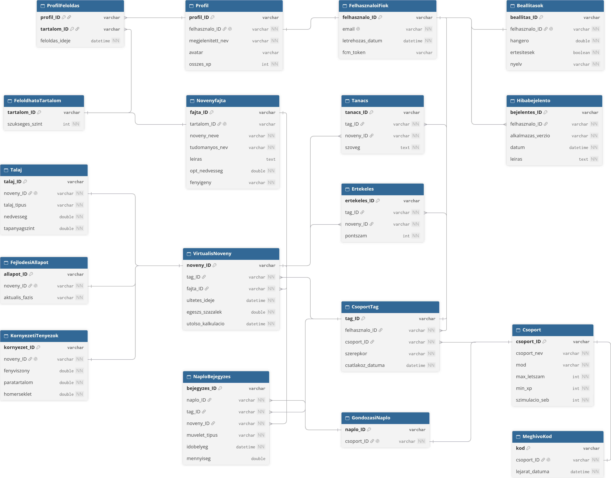

| Dátum | Verzió | Leírás | Szerző |
|---|---|---|---|
| 2026. 11. 15. | 1.0 | Teljes verzió | Suba Kinga, Zsólyomi Klaudia Vanda, Baranyovszki Kata, Zsák István, Mata Márk |
1. Bevezetés
A Rendszertervezés dokumentáció célja, hogy részletes betekintést nyújtson az applikáció struktúrájába és működésébe. A dokumentum kifejti a kezelőfelületek és az adatbázis közötti kapcsolatokat. A kezelőfelületek részletes leírása mellett bemutatja az adatbázis rendszer kialakítását, elemeit és szerepét a játék folyamatában.
2. Felhasználói felület
Felhasználói felület kialakításánál figyelembe vettük, hogy letisztult és átlátható legyen, egyszerre kevés interakciós elemmel pl. gombbal ellátva, hogy a kevesebb tapasztalattal rendelkező felhasználók is könnyen tudják használni.
A felület és az alkalmazásban megjelenő assetek grafikája pixel art stílusban készült. Ennek elsődleges oka, hogy barátibb, kevésbé túlstimuláló hatást kelthet a fiatal korosztály számára, hiszen ezen stílus egyik lényege , hogy a régi retro hardver korlátozott időben készült alkotásokra hasonlítson modernebb formában, tehát kevés szín kisebb felbontás felnagyobbítva, texture filtering kikapcsolva.
2.1. Töltőképernyő
Az alkalmazás megnyitása után az alap assetek betöltése után ez a tervezett képernyő fogad, mely közben az alkalmazás elvégzi a kellő mennyiségű háttér kommunikációt és kapcsoládást a szerverrel, adatbázissal.

2.2. Bejelentkezés/regisztráció felület
A töltőképernyő véget érése után, megjelenik egy képernyő melyen vélaszthatunk, hogy bejelentkezni szeretnénk vagy regisztrálni, a megfelelő kiválasztása után a hozzá tartozó menü megjelenik.


2.4. Profil felület
A főmenüben az avatárra koppintva megjelenik a profil ablak. Itt lehet felhasználó nevet módosítani (ez az ami csoportokban megjelenik mások számára), avatárt/profilképet és emellett megtalálhatjuk még a jelenlegi szintünket illetve egy "bar", csík/rúd formájában látjuk az előrehaladásunkat.

2.5. Csoportmenü
5 interaktáéható gomb található. Az exit amivel kiléphetünk a csoportból vissza a főmenübe. a Könyv amivel megtekinthetjük a gondozási naplót. A kérdőjel ami a súgó oldalt hozza fel, a ház amivel a gondozáó szpbába léphetünk és a bevásárló kosár amivel a boltba léphetünk feloldani növényeket.

2.6. Bolt

2.7. Növénygondozó szoba
A plusz ikonnal vehetünk fel (ültethetünk) új növényt amennyiben már van legalább 2, megjelenik az opció, hogy kiválasszuk a növényt. A növényre nyomva végezhetünk különféle műveleteket.

3. Adatmodellek
3.1. Adatbázis kezelő kiválasztása
Az alkalmazásunk működéséhez megbízható, felhőalapú adatbázisra van szükség, hiszen a többplatformos működés (Android és iOS) és a csoportos játékmenet miatt a felhasználóknak minden eszközről el kell érniük és azonnal látniuk kell a friss adatokat. El kell tárolnunk a regisztrációs adatokat, az egyéni beállításokat, a csoportokat és a meghívókódokat, a virtuális növények állapotát, valamint a közös gondozási napló bejegyzéseit.
A Palánták alkalmazás háttérrendszeréhez a Google Firebase szolgáltatásait, azon belül az adatok tárolásához a Cloud Firestore adatbázist, a bejelentkezéshez pedig a Firebase Authentication szolgáltatást választottuk:
- Azonnali frissítés a csoporttagok között: A Cloud Firestore az adatok változását azonnal elküldi az összes csatlakozott eszköznek. Ha valaki meglocsolja a növényt, a tanár és a többi diák oldalfrissítés nélkül rögtön látja a változást.
- Egyszerű összekötés a Flutterrel: A hivatalos Firebase csomagok (cloud_firestore, firebase_auth, firebase_messaging) kifejezetten Dart és Flutter alá készültek, így könnyen beépíthetők a programba.
- Offline működés: Ha átmenetileg megszakad az internetkapcsolat, a Firestore helyben eltárolja a változásokat, és amint visszajön a net, automatikusan szinkronizálja őket a szerverrel.
- Ingyenes kezdés és skálázhatóság: Nem kell saját szervert építenünk és üzemeltetnünk, a Firebase ingyenes (Spark) csomagja pedig bőven elég a fejlesztéshez és a teszteléshez is.
- Biztonságos hozzáférés: A Firebase Authentication intézi a belépést és a jelszavak védelmét, a Firestore Security Rules segítségével pedig beállíthatjuk, hogy egy csoport adatait csak a csoport tagjai láthassák.
3.2. Szemantikai adatmodell
3.3. Relációs adatmodell

Felhasznalo:
- email: a felhasználó egyedi e-mail címe
- letrehozas_datum: a regisztráció időpontja
- megjelenitett_nev: az alkalmazásban látható felhasználónév
- avatar: a kiválasztott profilkép azonosítója
- osszes_xp: a gondozási műveletekkel megszerzett tapasztalati pontok összege
- fcm_token: a push értesítések kézbesítéséhez használt eszközazonosító token
- Elsődleges kulcs: felhasznalo_ID
Beallitasok:
- hangero: a hangeffektek beállított hangereje
- ertesitesek: a push értesítések engedélyezettségét jelző logikai érték
- nyelv: a kezelőfelület kiválasztott nyelve
- Elsődleges kulcs: beallitas_ID
- Idegen kulcs: felhasznalo_ID (Felhasznalo tábla elsődleges kulcsa)
Csoport:
- csoport_nev: a csoport megnevezése
- mod: a csoport működési módja
- max_letszam: a csoportba csatlakozható tagok maximális száma
- min_xp: a csatlakozáshoz elvárt minimális XP-szint
- szimulacio_seb: a csoportra érvényes időszimulációs szorzó
- Elsődleges kulcs: csoport_ID
MeghivoKod:
- lejarat_datuma: a meghívókód érvényességének lejárati időpontja
- Elsődleges kulcs: kod
- Idegen kulcs: csoport_ID (Csoport tábla elsődleges kulcsa)
CsoportTag:
- szerepkor: a tag jogosultsági szintje
- csatlakoz_datuma: a csoportba való belépés időpontja
- Elsődleges kulcs: tag_ID
- Idegen kulcsok: felhasznalo_ID (Felhasznalo tábla elsődleges kulcsa), csoport_ID (Csoport tábla elsődleges kulcsa)
FeloldhatoTartalom:
- szukseges_szint: a tartalom feloldásához szükséges minimális felhasználói szint
- Elsődleges kulcs: tartalom_ID
FelhasznaloFeloldas:
- feloldas_ideje: a tartalom feloldásának pontos időpontja
- Elsődleges kulcsok és idegen kulcsok: felhasznalo_ID (Felhasznalo tábla elsődleges kulcsa), tartalom_ID (FeloldhatoTartalom tábla elsődleges kulcsa)
Novenyfajta:
- noveny_neve: a növényfajta magyar elnevezése
- tudomanyos_nev: a növényfajta latin neve
- leiras: oktató jellegű leírás a növény származásáról és jellemzőiről
- opt_nedvesseg: a növény számára ideális talajnedvességi érték
- fenyigeny: a növény fényigényének kategóriája
- Elsődleges kulcs: fajta_ID
- Idegen kulcs: tartalom_ID (FeloldhatoTartalom tábla elsődleges kulcsa)
VirtualisNoveny:
- ultetes_ideje: a növény elültetésének időpontja
- egeszs_szazalek: a növény aktuális általános egészségi állapota százalékban
- utolso_kalkulacio: a szimulációs motor utolsó állapotfrissítésének időbélyege
- Elsődleges kulcs: noveny_ID
- Idegen kulcsok: tag_ID (CsoportTag tábla elsődleges kulcsa), fajta_ID (Novenyfajta tábla elsődleges kulcsa)
FejlodesiAllapot:
- aktualis_fazis: a növény jelenlegi növekedési fázisa
- Elsődleges kulcs: allapot_ID
- Idegen kulcs: noveny_ID (VirtualisNoveny tábla elsődleges kulcsa)
KornyezetiTenyezok:
- fenyviszony: a növényt érő fényintenzitás mértéke
- paratartalom: a környezet levegőjének páratartalma
- homerseklet: a környezet aktuális hőmérséklete
- Elsődleges kulcs: kornyezet_ID
- Idegen kulcs: noveny_ID (VirtualisNoveny tábla elsődleges kulcsa)
Talaj:
- talaj_tipus: a kiválasztott talajfajta megnevezése
- nedvesseg: a talaj pillanatnyi víztartalma
- tapanyagszint: a talajban rendelkezésre álló tápanyagok mennyisége
- Elsődleges kulcs: talaj_ID
- Idegen kulcs: noveny_ID (VirtualisNoveny tábla elsődleges kulcsa)
NaploBejegyzes:
- muvelet_tipus: az elvégzett tevékenység típusa
- idobelyeg: a művelet végrehajtásának pontos időpontja
- mennyiseg: a felhasznált víz vagy tápoldat mennyisége
- Elsődleges kulcs: bejegyzes_ID
- Idegen kulcsok: noveny_ID (VirtualisNoveny tábla elsődleges kulcsa), tag_ID (CsoportTag tábla elsődleges kulcsa), csoport_ID (Csoport tábla elsődleges kulcsa)